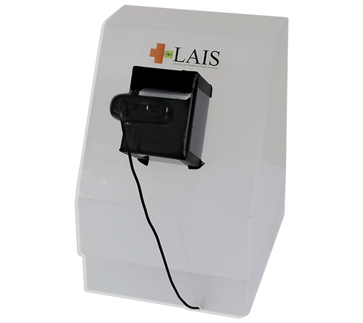
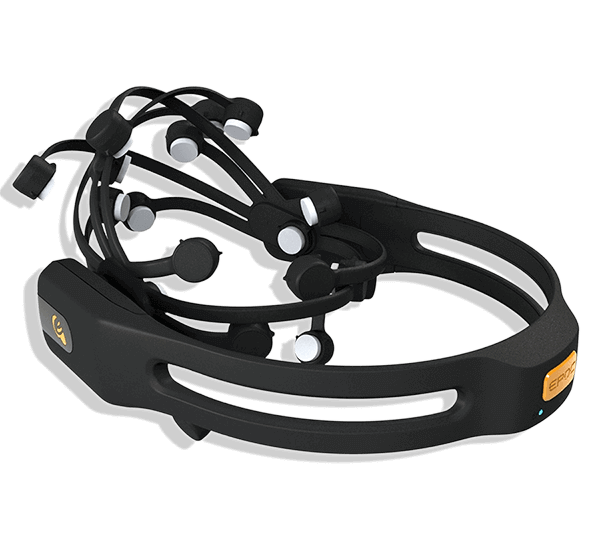
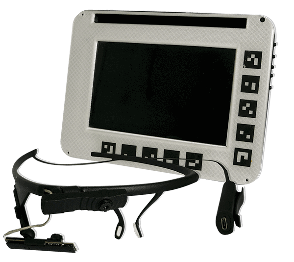
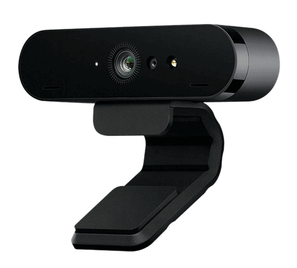
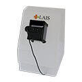
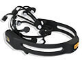
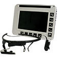
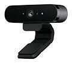

Tecnologia assistiva para pacientes portadores de Esclerose Lateral Amiotrófica (ELA)
O AUTONOMUS
O Autonomus é um projeto do Laboratório de Inovação Tecnológica em Saúde (LAIS), que apresenta a tecnologia assistiva para pacientes portadores de Esclerose Lateral Amiotrófica (ELA). Usando uma webcam comum em um computador portátil, o usuário do Autonomus é capaz de trocar emails, ler livros e até mesmo falar.
Captando os gestos da face do usuário, uma tecnologia batizada de Mímico, o sistema os traduz em ações no computador, como clicar, reproduzir um áudio, mandar um e-mail etc. Além disso, frases pré- programadas podem ser acionadas com apenas um gesto, facilitando um pedido de ajuda caso necessário.
Acesso internet
O Autonomus proporciona ao usuário acesso a internet e aos demais serviços oferecidos por ela, tais como enviar e receber e-mail, conversar nas redes sociais, acessar plataformas de vídeo e plataformas de streaming.
Acessibilidade
O Autonomus com a tecnologia mimico proporciona conforto ao usuário, pois não é necessário esforço para realizar as ações no sistema, com apenas gestos (como sorrir, abrir a boca, piscar os olhos) é possível utilizar toda as ferramentas do sistema.
Comunicação
Além de proporcionar o acesso a grandes ferramentas de comunicação, o sistema Autonomus possui o seu próprio, com um teclado redesenhado para o conforto do usuário, com botões de predição e até mesmo de fala.
Customização
O gerenciamento do Sistema fica a critério do usuário, podendo configurar a velocidade com que o mouse passa na tela, os gestos que irá utilizar, selecionando aqueles que mais se sente confortável.
Baixo Custo
O Autonomus possui como diferencial seu baixo custo, pois utilizando somente um computador pessoal e uma webcam, o usuário tem acesso a todos os recursos oferecidos pelo sistema.
Controle Universal
A tecnologia utilizada no autonomus, o mimico, não fica somente restrita para o acesso a internet, com ela, há possibilidade de manipular objetos de uma casa, como, por exemplo, ligar a televisão, desligar o ar condicionado, etc.

Um Anjo Para Ela
O anjo para ELA realizava o monitoramento dos parâmetros respiratórios dos pacientes em leitos hospitalares como forma de auxiliar à equipe de saúde em seu acompanhamento. Para isso, era utilizada uma webcam, que capturava os valores da tela do ventilador mecânico e os salvava no banco de dados. Assim, através de qualquer dispositivo, como smartphones, tablets, computadores, a equipe poderia se conectar ao sistema de supervisão, para monitorar de forma on-line a situação dos pacientes.

Epoc
O Epoc era uma espécie de tiara, que possuía pequenos dispositivos eletrônicos, utilizada para captar os impulsos eletromagnéticos vindos do cérebro, sendo estes transferidos para um computador que continha o software do Autonomus, que era responsável pela realização das atividades. Assim, era possível, por exemplo, que uma pessoa que não tem os movimentos dos membros pudesse mudar o canal da TV, mandar e-mails, escrever, usando apenas a visão.

Pupil
O Pupil é um óculos que utiliza uma técnica conhecida como eye tracking (rastreamento do movimento ocular) para detectar a direção para a qual o paciente está olhando. Por meio dessa detecção, era possível traduzir o movimento ocular do usuário em coordenadas do mouse no computador, permitindo que o mesmo fosse capaz de controlar todos os dispositivos eletrônicos da sua casa, trocar e-mails, ler livros e até mesmo falar.

Mímico
Com o objetivo de diminuir o custo para o uso do Autonomus, o Mímico é uma tecnologia capaz de rastrear a face inteira dos pacientes, com apenas uma webcam comum. A detecção dos gestos da face permite que o usuário utilize cada movimento, como o piscar dos olhos, o levantar das sobrancelhas e o abrir da boca para controlar todos os seus dispositivos smart, como celulares, TV e computadores. Além disso, os gestos também podem ser atrelados a frases de emergência, que são reproduzidas rapidamente quando acionadas.

Um Anjo Para Ela
Visão computacional aplicada ao monitoramento on-line de parâmetros respiratórios de pacientes em ambiente hospitalar.

Epoc
Captação de impulsos eletromagnéticos vindos do cérebro permitia ao paciente acessar o computador e controlar a televisão.

Pupil
Rastreamento do movimento ocular para controlar o mouse em computadores.

Mímico
Detecção dos gestos da face para reproduzir frases pré-programadas e controlar dispositivos smart.